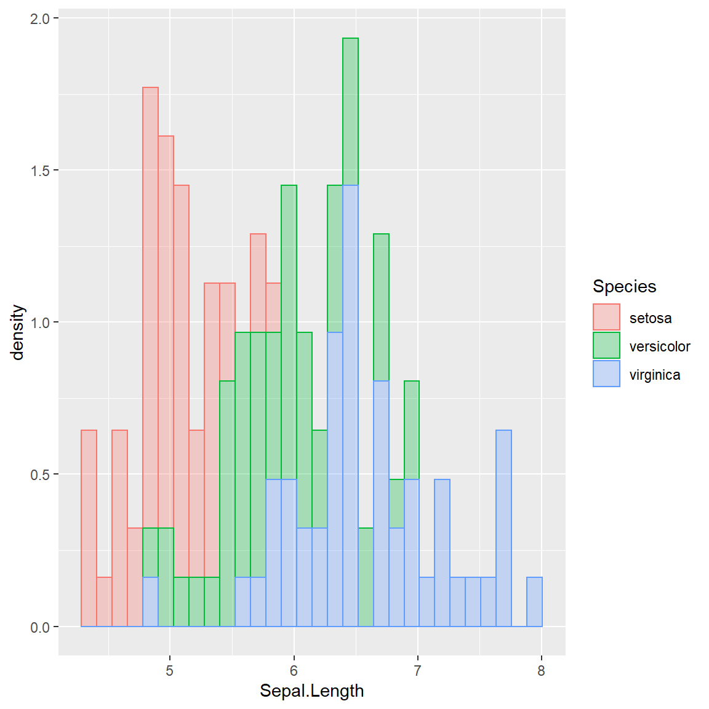
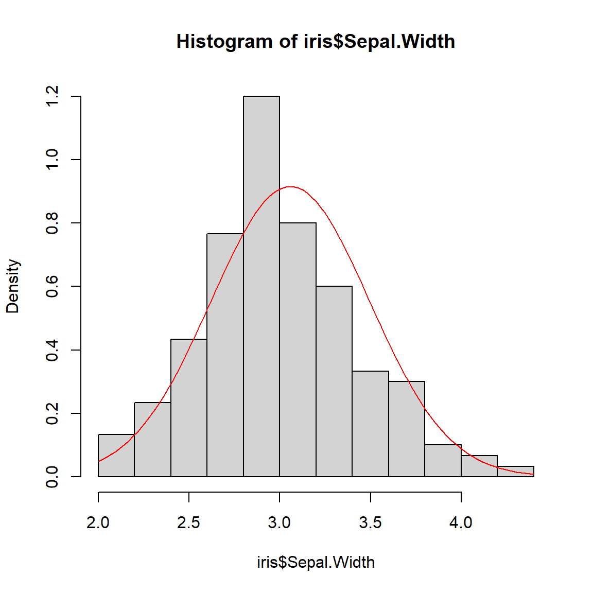

Ce document présente les outils pour effectuer les principaux tests statistiques. Il n’a pa vocation a présenter la théorie des tests, seulement à rappeler les principales commandes à utiliser avec R. Suite au cours, il m’a semblé que les niveaux des étudiant.e.s sont assez hétérogènes. J’ai donc ajouté un exemple introductif et explicité les hypothèses et les conclusions de chaque test pour une meilleure compréhension.
Rappel sur les tests statistiques
A partir de l’information disponible dans l’échantillon on confronte
deux hypothèses sur un paramètre d’intérêt pour une ou plusieurs
populations. On définit :
- H0 : l’hypothèse nulle
- H1 : l’hypothèse alternative
Exemple 1 : Le salaire net moyen mensuel des étudiants de ce cours à
la sortie du M2 est-il supérieur à 1500€ ?
- H0 : salaire <1500€
- H1 : salaire >= 1500€
Exemple 2 : Le salaire net moyen mensuel des étudiants de ce cours à
la sortie du M2 serat-il identique pour les femmes et pour les hommes
?
- H0 : Salaire moyen Hommes = Salaire moyen Femmes
- H1 : Salaire moyen Hommes \({\ne}\)
Salaire moyen Femmes
| Décision | |||
| Conserver H0 | Rejeter H0 /accepter H1 | ||
| Réalité | H0 vraie | Bonne décision | Erreur de première espèce \(\alpha\) |
| H0 fausse / H1 vraie | Erreur de deuxième espèce β | Bonne décision ; Puissance du test 1-β |
Dans la démarche fréquentiste classique, on cherche à contrôler, minimiser les risque alpha au détriment de l’erreur de deuxième espèce. On a un déséquilibre dans les deux hypothèses. H0 est une vraie décision. L’intuition de l’idée c’est qu’on préfère minimiser le risque d’emprisonner quelqu’un qui est innocent au détriment du risque de laisser libre un coupable.
Le risque alpha est donc la probabilité de rejeter l’hypothèse H0 alors qu’elle était vraie. Ou dit autrement, il s’agit de la probabilité, si H0 est vraie, d’observer les valeurs de notre échantillon.
Lorsqu’on effectue un test statistique, on estime la fameuse p-value qui est le risque alpha associé au test. La p-value est la probabilité de vous tromper en déclarant que H0 est fausse. On souhaite donc que la probabilité de se tromper soit la plus faible possible. Le seuil est souvent fixé à 5% (dans le nucléaire on fixe un seuil beaucoup plus faible). Ce qui signifie que si la p-value est inférieur à 5%, on va rejeter H0 et retenir l’hypothèse alternative H1.
Exemple :
Un ami vous propose un jeu d’argent. Vous devez tirer un dé à 6 faces 3
fois d’affilé. Pour chaque valeur supérieure ou égale à 3 vous gagnez
1euro. Pour chaque valeur égale à 1 ou 2 vous perdez 1€. Vous acceptez
de jouer à ce jeu et vous obtenez les valeurs suivantes : 1,2,1. Vous
avez perdu 3€. Votre ami vous propose de jouer à nouveau, mais le doute
s’installe. Le dé serait-il truqué ?
2 possibilités s’offrent à vous :
Si votre amitié est importante, vous allez vouloir minimiser le
risque de vous fâcher avec votre ami en l’accusant à tord de tricher, on
pose alors :
H0 : le dé n’est pas truqué
H1 : le dé est truqué
Ou alors, vous êtes un vrai radin et votre amitié est secondaire,
vous voulez minimiser le risque de perdre de l’argent :
H0 : le dé est truqué
H1 : le dé n’est pas truqué
On se pose dans le premier cas, et on suppose que le dé n’est pas truqué. Sous cette hypothèse, la probabilité de n’obtenir que des faces perdantes (1 ou 2) est égale à \(\frac {2}{6}*\frac {2}{6}*\frac {2}{6}\) soit \(\frac {8}{216}\) soit \(\frac {1}{27}\) soit 3.3%. Si vous accusez votre ami de tricher (de rejeter H0), vous vous avez 1 chance sur 27 de vous tromper.
La probabilité de n’obtenir que des 1 et des 2 est donc faible mais elle n’est pas nulle. Vous êtes peut-être particulièrement malchanceux. Je vous conseille de tirer le dé discrètement 30 fois d’affilé et de compter le nombre de 1 et de 2 avant de risquer de fâcher votre ami!
Tests paramétriques ou non paramétriques?
Le test paramétrique est un test pour lequel on fait une hypothèse sur la forme (la distribution) des données. On considère que l’échantillon est tiré selon une loi de distribution appartenant à une famille donné (loi Normale, loi de Poisson…). Lorsque la taille de l’échantillon est suffisamment grande, on peut s’affranchir de ces postulats grâce au théorème asymptomatiques comme le Théorème Centrale Limite (TCL).
Les test non paramétriques vont permettre de tester des données issues de petits échantillons dont on ne connait pas la distribution. Ils sont dit non paramétriques puisqu’ils n’impliquent pas l’estimation de paramètre décrivant la distribution de la variable étudiée (comme la moyenne ou l’écart-type). On peut les utiliser quelque soit la loi de l’échantillon.
En général les tests non paramétriques sont plus conservateurs (on rejette H0 moins souvent). Ces tests sont à privilégier en présence de petits échantillon.
Présentation des jeux de données
Les tests statistiques seront mis en oeuvre sur deux jeux de données.
Le premier jeu de données s’appelle iris, c’est un jeu de
données proposées par défaut sous R. J’utilise la fonction
glimpse de la librairie tidyverse pour décrire
les variables succinctement. Ce jeu de données décrit la largeur et la
longueur de pétal et de sépal mesurées sur 150 fleurs. Ces fleurs sont
issues de 3 espèces différentes.
Le deuxième jeu de données, fictif lui aussi, décrit les habitudes de
vie de 2000 personnes. Ce fichier de données est rattaché à la librairie
questionr, il faut utiliser la fonction
datapour charger les données dans l’environnement de R.
J’utilise à nouveau la fonction glimpse pour décrire les
données.
glimpse(iris)## Rows: 150
## Columns: 5
## $ Sepal.Length <dbl> 5.1, 4.9, 4.7, 4.6, 5.0, 5.4, 4.6, 5.0, 4.4, 4.9, 5.4, 4.…
## $ Sepal.Width <dbl> 3.5, 3.0, 3.2, 3.1, 3.6, 3.9, 3.4, 3.4, 2.9, 3.1, 3.7, 3.…
## $ Petal.Length <dbl> 1.4, 1.4, 1.3, 1.5, 1.4, 1.7, 1.4, 1.5, 1.4, 1.5, 1.5, 1.…
## $ Petal.Width <dbl> 0.2, 0.2, 0.2, 0.2, 0.2, 0.4, 0.3, 0.2, 0.2, 0.1, 0.2, 0.…
## $ Species <chr> "setosa", "setosa", "setosa", "setosa", "setosa", "setosa…library(questionr)
data(hdv2003)
d <- hdv2003
glimpse(d)## Rows: 2,000
## Columns: 20
## $ id <int> 1, 2, 3, 4, 5, 6, 7, 8, 9, 10, 11, 12, 13, 14, 15, 16, 1…
## $ age <int> 28, 23, 59, 34, 71, 35, 60, 47, 20, 28, 65, 47, 63, 67, …
## $ sexe <fct> Femme, Femme, Homme, Homme, Femme, Femme, Femme, Homme, …
## $ nivetud <fct> "Enseignement superieur y compris technique superieur", …
## $ poids <dbl> 2634.3982, 9738.3958, 3994.1025, 5731.6615, 4329.0940, 8…
## $ occup <fct> "Exerce une profession", "Etudiant, eleve", "Exerce une …
## $ qualif <fct> Employe, NA, Technicien, Technicien, Employe, Employe, O…
## $ freres.soeurs <int> 8, 2, 2, 1, 0, 5, 1, 5, 4, 2, 3, 4, 1, 5, 2, 3, 4, 0, 2,…
## $ clso <fct> Oui, Oui, Non, Non, Oui, Non, Oui, Non, Oui, Non, Oui, O…
## $ relig <fct> Ni croyance ni appartenance, Ni croyance ni appartenance…
## $ trav.imp <fct> Peu important, NA, Aussi important que le reste, Moins i…
## $ trav.satisf <fct> Insatisfaction, NA, Equilibre, Satisfaction, NA, Equilib…
## $ hard.rock <fct> Non, Non, Non, Non, Non, Non, Non, Non, Non, Non, Non, N…
## $ lecture.bd <fct> Non, Non, Non, Non, Non, Non, Non, Non, Non, Non, Non, N…
## $ peche.chasse <fct> Non, Non, Non, Non, Non, Non, Oui, Oui, Non, Non, Non, N…
## $ cuisine <fct> Oui, Non, Non, Oui, Non, Non, Oui, Oui, Non, Non, Oui, N…
## $ bricol <fct> Non, Non, Non, Oui, Non, Non, Non, Oui, Non, Non, Oui, O…
## $ cinema <fct> Non, Oui, Non, Oui, Non, Oui, Non, Non, Oui, Oui, Oui, N…
## $ sport <fct> Non, Oui, Oui, Oui, Non, Oui, Non, Non, Non, Oui, Non, O…
## $ heures.tv <dbl> 0.0, 1.0, 0.0, 2.0, 3.0, 2.0, 2.9, 1.0, 2.0, 2.0, 1.0, 0…Comparaisons de moyennes - tests paramétriques
Comparaison de deux moyennes - Tests de Student
Conditions du tests
- X suit une loi normale ou n est grand (>30)
- préciser en option si les variances sont égales
var.equal = T (test de Student) ou inégales
var.equal = F (test de Welsh)
Exemple : La moyenne d’âge est-elle différente selon qu’on écoute du hard rock ou non ?
Hypothèses
H0 : moyenne d’âge des personnes qui écoutent du hard rock = moyenne
d’âge des personnes qui n’écoutent pas de hard rock
H1 : moyenne d’âge des personnes qui écoutent du hard rock \(\ne\) moyenne d’âge des personnes qui
n’écoutent pas de hard rock
OU
\({H0 :}\;\overline{Age}_{Hard Rock=Non} = \overline{Age}_{Hard Rock=Oui}\;\) versus \(\;{H1 :}\;\overline{Age}_{Hard Rock=Non} \neq \overline{Age}_{Hard Rock=Oui}\)
Description des données
On calcul les principaux indicateurs de dispersion pour chaque
groupe.
d %>%
group_by(hard.rock) %>%
summarise(
min=min(age,na.rm = T),
p25=quantile(age,0.25,na.rm = T),
median=median(age,na.rm = T),
p75=quantile(age,0.75,na.rm = T),
max=max(age,na.rm = T),
`ecart-type`=sd(age,na.rm = T),
moyenne=mean(age,na.rm = T),
n=sum(!is.na(age))
) %>%
bind_rows(
d %>% summarise(
min=min(age,na.rm = T),
p25=quantile(age,0.25,na.rm = T),
median=median(age,na.rm = T),
p75=quantile(age,0.75,na.rm = T),
max=max(age,na.rm = T),
`ecart-type`=sd(age,na.rm = T),
moyenne=mean(age,na.rm = T),
n=sum(!is.na(age))
)
) %>%
mutate(hard.rock=if_else(is.na(hard.rock),"Ensemble",as.character(hard.rock))) %>%
kable(digits = 1) %>%
kable_styling("striped") | hard.rock | min | p25 | median | p75 | max | ecart-type | moyenne | n |
|---|---|---|---|---|---|---|---|---|
| Non | 18 | 35.0 | 48.0 | 60.0 | 97 | 16.9 | 48.3 | 1986 |
| Oui | 19 | 22.2 | 25.5 | 30.5 | 44 | 7.9 | 27.6 | 14 |
| Ensemble | 18 | 35.0 | 48.0 | 60.0 | 97 | 16.9 | 48.2 | 2000 |
Explications sur le code
group_by(hard.rock) indique que la suite des opérations
doit s’appliquer à chacune des valeurs de hard.rock
bind_rows(...) permet de concaténer des lignes à notre
tableau initial. Ici, cela me permet d’ajouter une ligne pour l’ensemble
des données
mutate(hard.rock=if_else(is.na(hard.rock),"Ensemble",as.character(hard.rock)))
renomme la dernière ligne Ensemble
kable(digits = 1) indique que les variables en format
numerique doivent être arrondies un chiffre après la virgule
kable_styling("striped") permet d’avoir un joli tableau en
sortie RMarkdown
L’option na.rm = T indique de calculer les statistiques sur
le sous-échantillons des données non manquantes. Ici on n’a pas de
données manquantes mais c’est souvent le cas. Si vous êtes en présence
de données manquantes et que vous n’avaez pas indiqué cette option, R
renvoie NA à la place de l’indicateur que vous souhaitiez calculer.
Lecture
L’âge médian des personnes qui écoutent du hard rock est de 25.5 ans
alors que l’âge médian des personnes qui n’écoutent pas de hard rock est
de 48 ans.
L’âge moyen des personnes qui écoutent du hard rock est de 27.6 ans
alors que l’âge moyen des personnes qui n’écoutent pas de hard rock est
de 48.3 ans.
Représentation graphique Ci après un exemple de boîte à moustache.
boxplot(age ~ hard.rock, data=d)Maintenant on effectue le test de Student pour tester si l’âge moyen est différent dans les deux groupes.
t.test(age ~ hard.rock, data=d, var.equal = F, alternative = "two.sided")##
## Welch Two Sample t-test
##
## data: age by hard.rock
## t = 9.6404, df = 13.848, p-value = 1.611e-07
## alternative hypothesis: true difference in means between group Non and group Oui is not equal to 0
## 95 percent confidence interval:
## 16.11379 25.34758
## sample estimates:
## mean in group Non mean in group Oui
## 48.30211 27.57143Interprétation La probabilité de rejeter H0 en se
trompant est égale à 1.611e-07 soit à 0.0000001611. Ou dit autrement, la
p-value est inférieure à 5%, donc on rejette H0, donc on accepte
H1.
On rejette l’hypothèse d’égalité des moyenne (H0), ce qui revient à dire
que les moyennes sont significativement différentes (H1). Ce qui n’est
pas vraiment étonnant puisque les personnes qui écoutent du hard rock
sont nettement plus jeunes dans notre échantillon.
Remarques
Ces remarques sont généralisables à l’ensemble des tests présentés dans
la suite du document. Pour alléger le document, je me placerai ensuite
toujours dans le cas de deux échantillons indépendants et d’un test
bilatéral. Mais il est presque toujours possible en modifiant les
options d’indiquer s’il s’agit dun test de conformité sur un seul
échantillon, ou s’il s’agit de deux échantillons appariés ou encore
d’indiquer que l’on souhaite effectuer un test unilatéral.
Tests unilatéral ou bilatéral
On aurait pu vouloir tester si les personnes qui n’écoutent pas du hard rock sont plus âgées que les personnes qui en écoutent. C’est ce qu’on appelle un test unilatéral. Les hypothèses deviennent alors les suivantes.Test unilatéral
H0 : la moyenne d’âge des personnes qui n’écoutent pas du hard-rock est <= à la moyenne d’âge des personnes qui écoutent du hard-rock
H1 : la moyenne d’âge des personnes qui n’écoutent pas du hard-rock est > à la moyenne d’âge des personnes qui écoutent du hard-rockOU
\({H0 :}\;\overline{Age}_{Hard Rock=Non} \leq \overline{Age}_{Hard Rock=Oui}\;\) versus \(\;{H1 :}\;\overline{Age}_{Hard Rock=Non} > \overline{Age}_{Hard Rock=Oui}\)
La commande à utilser est alors la suivante (on modifie l’option
alternative) :
t.test(age ~ hard.rock, data=d, var.equal = F, alternative = "greater")Echantillons appariés
Les échantillons appariées concernent les cas de mesures répétées sur un même individu. Le calcul de la variance est alors différent et le test est plus puissant. Par exemple, on mesure le taux de glycémie avant et après un effort sportif d’un ensemble d’individu puis on teste si le taux de glycémie moyen a baissé avant et après l’effort. Il faut alors préciser qu’il s’agit d’un échantillon apparié avec l’optionpaired=TRUE. Si les mesures sont effectuées sur des échantillons distincts, on parle alors d’échantillons indépendants.Test de conformité sur un échantillon
On aurait pu tester si la moyenne d’âge dans notre échantillon était égale à une valeur de référence.
Exemple : est-ce que la moyenne d’âge des personnes qui n’écoutent pas du hard rock est égale à 30 ?
H0 : la moyenne d’âge des personnes qui n’écoutent pas du hard rock est égale à 30
H1 : la moyenne d’âge des personnes qui n’écoutent pas du hard rock est différente de 30
OU \({H0 :}\;\overline{Age}=30\;\) versus \(\;{H1 :}\;\overline{Age} \ne 30\)La commande à utilser est alors la suivante :
t.test(d$age[d$hard.rock=="Non"],mu=30,alternative = "two.sided")
Comparaison de k moyennes
Analyse de variance par ANOVA
Conditions :
- normalité des résidus
- homoscédasticité des résidus
H0 [toutes les moyennes sont égales ] \(m_{1}=m_{2}=...=m_{n}\)
H1 [au moins une moyenne est différente] \(\exists \; (i,j) \; _{i \ne j} \; tq \; m_{i} \ne
m_{j}\)
Exemple
On va comparer la largeur moyenne des sépales de 3 espèces setosa,
versicolor, virginica. On utilise les variables
Sepal.Widthet Species du jeu de données
iris.
H0 : la moyenne des largeurs des sépales sont égales pour les 3
espèces
H1 : au moins deux espèces ont des largeurs moyenne de sépales
différentes
Description des données
On calcul les principaux indicateurs de dispersion pour chaque
groupe.
iris %>%
group_by(Species) %>%
summarise(
min=min(Sepal.Width,na.rm = T),
p25=quantile(Sepal.Width,0.25,na.rm = T),
median=median(Sepal.Width,na.rm = T),
p75=quantile(Sepal.Width,0.75,na.rm = T),
max=max(Sepal.Width,na.rm = T),
`ecart-type`=sd(Sepal.Width,na.rm = T),
moyenne=mean(Sepal.Width,na.rm = T),
n=sum(!is.na(Sepal.Width))
) %>%
bind_rows(
iris %>% summarise(
min=min(Sepal.Width,na.rm = T),
p25=quantile(Sepal.Width,0.25,na.rm = T),
median=median(Sepal.Width,na.rm = T),
p75=quantile(Sepal.Width,0.75,na.rm = T),
max=max(Sepal.Width,na.rm = T),
`ecart-type`=sd(Sepal.Width,na.rm = T),
moyenne=mean(Sepal.Width,na.rm = T),
n=sum(!is.na(Sepal.Width))
)
) %>%
mutate(Species=if_else(is.na(Species),"Ensemble",as.character(Species))) %>%
kable(digits = 1) %>%
kable_styling("striped") | Species | min | p25 | median | p75 | max | ecart-type | moyenne | n |
|---|---|---|---|---|---|---|---|---|
| setosa | 2.3 | 3.2 | 3.4 | 3.7 | 4.4 | 0.4 | 3.4 | 50 |
| versicolor | 2.0 | 2.5 | 2.8 | 3.0 | 3.4 | 0.3 | 2.8 | 50 |
| virginica | 2.2 | 2.8 | 3.0 | 3.2 | 3.8 | 0.3 | 3.0 | 50 |
| Ensemble | 2.0 | 2.8 | 3.0 | 3.3 | 4.4 | 0.4 | 3.1 | 150 |
Représentation graphique
boxplot(Sepal.Width ~ Species, iris)
ANOVA
model = aov(Sepal.Width ~ Species, iris)
summary(model)## Df Sum Sq Mean Sq F value Pr(>F)
## Species 2 11.35 5.672 49.16 <2e-16 ***
## Residuals 147 16.96 0.115
## ---
## Signif. codes: 0 '***' 0.001 '**' 0.01 '*' 0.05 '.' 0.1 ' ' 1Vérification des hypothèses de normalité et d’homoscédasticité
qqnorm(model$res)
shapiro.test(model$res)##
## Shapiro-Wilk normality test
##
## data: model$res
## W = 0.98948, p-value = 0.323bartlett.test(model$res, iris$Species)##
## Bartlett test of homogeneity of variances
##
## data: model$res and iris$Species
## Bartlett's K-squared = 2.0911, df = 2, p-value = 0.3515Interprétation
Le test de Shapiro permet de vérifier la normalité des résidus du
modèle de l’ANOVA.
H0 : les données sont issues d’une population normalement
distribuée
H1 : les données ne sont pas issues d’une population normalement
distribuée
La p-valeur du test de Shapiro sur les résidus du modèle est égale à
0.323. La p-valeur est supérieure à 5%, on accepte donc H0.
Les résidus du modèle sont ditribués normalement.
Le test de Bartlett permet de vérifier l’homoscédasticité des
variances des résidus du modèle.
H0 : les variances des résidus du modèles sont identiques dans les 3
groupes d’espèces [homoscédasticité]
H1 : les variances des résidus du modèles sont différentes pour au moins
deux espèces [hétéroscédasticité]
La p-valeur du test de Bartlett sur les résidus du modèle est égale à
0.3515. La p-valeur est supérieure à 5%, on accepte donc
H0. Les résidus du modèle sont homoscédastiques.
Les résidus du modèle de l’ANOVA sont normaux et homoscédastiques.
Les conditions du modèle sont vérifiées. On peut donc interpréter les
résultats de l’ANOVA. La p-valeur de l’ANOVA sur les résidus du modèle
est égale à <2e-16. La probabilité est tellement faible
que le logiciel vous indique qu’elle est inférieure à
0.0000000000000002, ce qui s’écrit bien \(2*10^{-16}\) en écriture scientifique. La
p-valeur est inférieure à 5%, on rejette H0 et on accepte H1. La moyenne
des largeurs de sépal est différente pour au moins deux espèces.
Tests de Tuckey
Le test de Tuckey va permettre de comparer les moyennes 2 à 2 pour chaque groupe. Le fait de multiplier les tests statistiques augmente la probabilité globale de se tromper quand on rejette H0 (risque α). Le test de Tuckey propose une correction de l’inflation du risque α.
Conditions :
- normalité des résidus
- homoscédasticité des résidus
Exemple
On va comparer la largeur moyenne des sépales de 3 espèces setosa,
versicolor, virginica. On utilise les variables
Sepal.Widthet Species du jeu de données
iris.
H0 : on teste si la moyenne des largeurs des sépales est égales pour les
espèces prises 2 à 2
H1 : on teste si la moyenne des largeurs des sépales est différente pour
les espèces prises 2 à 2
Description des données
On calcul les principaux indicateurs de dispersion pour chaque
groupe.
iris %>%
group_by(Species) %>%
summarise(
min=min(Sepal.Width,na.rm = T),
p25=quantile(Sepal.Width,0.25,na.rm = T),
median=median(Sepal.Width,na.rm = T),
p75=quantile(Sepal.Width,0.75,na.rm = T),
max=max(Sepal.Width,na.rm = T),
`ecart-type`=sd(Sepal.Width,na.rm = T),
moyenne=mean(Sepal.Width,na.rm = T),
n=sum(!is.na(Sepal.Width))
) %>%
bind_rows(
iris %>% summarise(
min=min(Sepal.Width,na.rm = T),
p25=quantile(Sepal.Width,0.25,na.rm = T),
median=median(Sepal.Width,na.rm = T),
p75=quantile(Sepal.Width,0.75,na.rm = T),
max=max(Sepal.Width,na.rm = T),
`ecart-type`=sd(Sepal.Width,na.rm = T),
moyenne=mean(Sepal.Width,na.rm = T),
n=sum(!is.na(Sepal.Width))
)
) %>%
mutate(Species=if_else(is.na(Species),"Ensemble",as.character(Species))) %>%
kable(digits = 1) %>%
kable_styling("striped") | Species | min | p25 | median | p75 | max | ecart-type | moyenne | n |
|---|---|---|---|---|---|---|---|---|
| setosa | 2.3 | 3.2 | 3.4 | 3.7 | 4.4 | 0.4 | 3.4 | 50 |
| versicolor | 2.0 | 2.5 | 2.8 | 3.0 | 3.4 | 0.3 | 2.8 | 50 |
| virginica | 2.2 | 2.8 | 3.0 | 3.2 | 3.8 | 0.3 | 3.0 | 50 |
| Ensemble | 2.0 | 2.8 | 3.0 | 3.3 | 4.4 | 0.4 | 3.1 | 150 |
Représentation graphique
boxplot(Sepal.Width ~ Species, iris)
TukeyHSD
model = aov(Sepal.Width ~ Species, iris)
TukeyHSD(model)## Tukey multiple comparisons of means
## 95% family-wise confidence level
##
## Fit: aov(formula = Sepal.Width ~ Species, data = iris)
##
## $Species
## diff lwr upr p adj
## versicolor-setosa -0.658 -0.81885528 -0.4971447 0.0000000
## virginica-setosa -0.454 -0.61485528 -0.2931447 0.0000000
## virginica-versicolor 0.204 0.04314472 0.3648553 0.0087802plot(TukeyHSD(model))Vérification des hypothèses de normalité et d’homoscédasticité
qqnorm(model$res)shapiro.test(model$res)##
## Shapiro-Wilk normality test
##
## data: model$res
## W = 0.98948, p-value = 0.323bartlett.test(model$res, iris$Species)##
## Bartlett test of homogeneity of variances
##
## data: model$res and iris$Species
## Bartlett's K-squared = 2.0911, df = 2, p-value = 0.3515Interprétation
Le test de Shapiro permet de vérifier la normalité des résidus du
modèle de l’ANOVA.
H0 : les données sont issues d’une population normalement
distribuée
H1 : les données ne sont pas issues d’une population normalement
distribuée
La p-valeur du test de Shapiro sur les résidus du modèle est égale à
0.323. La p-valeur est supérieure à 5%, on accepte donc H0.
Les résidus du modèle sont ditribués normalement.
Le test de Bartlett permet de vérifier l’homoscédasticité des variances des résidus du modèle. H0 : les variances des résidus du modèles sont identiques dans les 3 groupes d’espèces [homoscédasticité] H1 : les variances des résidus du modèles sont différentes pour au moins deux espèces [hétéroscédasticité]
La p-valeur du test de Bartlett sur les résidus du modèle est égale à
0.3515. La p-valeur est supérieure à 5%, on accepte donc
H0. Les résidus du modèle sont homoscédastiques.
Les résidus du modèle de l’ANOVA sont normaux et homoscédastiques. Les conditions du modèle sont vérifiées. On peut donc interpréter les résultats du test de Tuckey.
versicolor-setosa
H0 : largeur moyenne du sépal de l’espèce versicolor = largeur moyenne du sépal de l’espèce setosa
H1 : largeur moyenne du sépal de l’espèce versicolor \(\ne\) largeur moyenne du sépal de l’espèce setosa
La p-value est égale à0.0000000, ce qui signifie qu’elle est inférieure à \(10^{-7}\). On rejette H0. Les largeurs moyenne des sépal des espèces versicolor et setosa sont significativement différentes.virginica-setosa
H0 : largeur moyenne du sépal de l’espèce virginica = largeur moyenne du sépal de l’espèce setosa
H1 : largeur moyenne du sépal de l’espèce virginica \(\ne\) largeur moyenne du sépal de l’espèce setosa
La p-value est égale à0.0000000, ce qui signifie qu’elle est inférieure à \(10^{-7}\). On rejette H0. Les largeurs moyenne des sépal des espèces virginica et setosa sont significativement différentes.virginica-versicolor
H0 : largeur moyenne du sépal de l’espèce virginica = largeur moyenne du sépal de l’espèce versicolor
H1 : largeur moyenne du sépal de l’espèce virginica \(\ne\) largeur moyenne du sépal de l’espèce versicolor
La p-value est égale à0.0087802, elle est <5%. On rejette H0. Les largeurs moyenne des sépal des espèces virginica et versicolor sont significativement différentes.
Comparaison de variance
Comparaison de deux échantillons indépendants : Test de Fisher-Snedecor
On teste si les variances de deux échantillons sont égales.
H0 : \(\sigma^2_1=\sigma^2_2\)
H1 : \(\sigma^2_1\ne\sigma^2_2\)
Conditions Les données issues des échantillons sont gaussiennes
Exemple On va tester si la variance des largeurs de sépal de l’espèce setosa est égale à la variance des largeurs de sépal de l’espèce versicolor.
On décrit les données
iris %>%
filter(Species=="setosa" | Species=="versicolor") %>%
group_by(Species) %>%
summarise(
min=min(Sepal.Width,na.rm = T),
p25=quantile(Sepal.Width,0.25,na.rm = T),
median=median(Sepal.Width,na.rm = T),
p75=quantile(Sepal.Width,0.75,na.rm = T),
max=max(Sepal.Width,na.rm = T),
`ecart-type`=sd(Sepal.Width,na.rm = T),
moyenne=mean(Sepal.Width,na.rm = T),
n=sum(!is.na(Sepal.Width))
) %>%
bind_rows(
iris %>% summarise(
min=min(Sepal.Width,na.rm = T),
p25=quantile(Sepal.Width,0.25,na.rm = T),
median=median(Sepal.Width,na.rm = T),
p75=quantile(Sepal.Width,0.75,na.rm = T),
max=max(Sepal.Width,na.rm = T),
`ecart-type`=sd(Sepal.Width,na.rm = T),
moyenne=mean(Sepal.Width,na.rm = T),
n=sum(!is.na(Sepal.Width))
)
) %>%
mutate(Species=if_else(is.na(Species),"Ensemble",as.character(Species))) %>%
kable(digits = 1) %>%
kable_styling("striped") | Species | min | p25 | median | p75 | max | ecart-type | moyenne | n |
|---|---|---|---|---|---|---|---|---|
| setosa | 2.3 | 3.2 | 3.4 | 3.7 | 4.4 | 0.4 | 3.4 | 50 |
| versicolor | 2.0 | 2.5 | 2.8 | 3.0 | 3.4 | 0.3 | 2.8 | 50 |
| Ensemble | 2.0 | 2.8 | 3.0 | 3.3 | 4.4 | 0.4 | 3.1 | 150 |
Représentation graphique
i <- iris %>% filter(Species=="setosa" | Species=="versicolor")
#i$Species <- droplevels(i$Species)
boxplot(Sepal.Width ~ Species, data=i)ggplot(data=i, aes(x = Sepal.Length,y = ..density..,color=Species,fill=Species)) + geom_histogram(alpha=0.3)Test de Fisher
var.test(Sepal.Width ~ Species, data=i)##
## F test to compare two variances
##
## data: Sepal.Width by Species
## F = 1.4592, num df = 49, denom df = 49, p-value = 0.1895
## alternative hypothesis: true ratio of variances is not equal to 1
## 95 percent confidence interval:
## 0.828080 2.571444
## sample estimates:
## ratio of variances
## 1.459233Vérifications des conditions
shapiro.test(iris$Sepal.Width[iris$Species=="versicolor"])##
## Shapiro-Wilk normality test
##
## data: iris$Sepal.Width[iris$Species == "versicolor"]
## W = 0.97413, p-value = 0.338shapiro.test(iris$Sepal.Width[iris$Species=="setosa"])##
## Shapiro-Wilk normality test
##
## data: iris$Sepal.Width[iris$Species == "setosa"]
## W = 0.97172, p-value = 0.2715Interprétation
Le test de Shapiro permet de vérifier la normalité des données issues
d’un échantillon.
H0 : les données sont issues d’une population normalement distribuée
[homoscédasticité]
H1 : les données ne sont pas issues d’une population normalement
distribuée [hétéroscédasticité]
- La p-valeur associée au test de normalité de Shapiro nous montre que
nos deux échantillons suivent bien une loi normale. En effet, les
p-valeurs sont égales à
0.338et0.2715, elles sont supérieures à 5%, dans les deux cas on accepte H0, ie la normalité des distributions.
- La p-valeur du test de Fisher est égale à
0.1895, elle est supérieure à 5%, on accepte H0. Les variances sont égales dans les deux échantillons. On parle d’homoscédasticité.
Comparaison de k échantillon : Test de Bartlett
Le test de Bartlett permet de vérifier l’égalité des variances des
résidus du modèle.
H0 : les variances des résidus du modèles sont identiques dans les 3
groupes d’espèces [homoscédasticité]
H1 : les variances des résidus du modèles sont différentes pour au moins
deux espèces [hétéroscédasticité]
OU
H0 [toutes les variances sont égales ] \(\sigma_{1}=\sigma_{2}=...=\sigma_{n}\)
H1 [au moins une variances est différente] \(\exists \; (i,j) \; _{i \ne j} \; tq \; \sigma_{i}
\ne \sigma_{j}\)
Conditions
Les données issues des échantillons sont gaussiennes
Exemple
On va tester si la variance des largeurs de sépal est égale pour les 3
espèces de fleurs.
On décrit les données
iris %>%
group_by(Species) %>%
summarise(
min=min(Sepal.Width,na.rm = T),
p25=quantile(Sepal.Width,0.25,na.rm = T),
median=median(Sepal.Width,na.rm = T),
p75=quantile(Sepal.Width,0.75,na.rm = T),
max=max(Sepal.Width,na.rm = T),
`ecart-type`=sd(Sepal.Width,na.rm = T),
moyenne=mean(Sepal.Width,na.rm = T),
n=sum(!is.na(Sepal.Width))
) %>%
bind_rows(
iris %>% summarise(
min=min(Sepal.Width,na.rm = T),
p25=quantile(Sepal.Width,0.25,na.rm = T),
median=median(Sepal.Width,na.rm = T),
p75=quantile(Sepal.Width,0.75,na.rm = T),
max=max(Sepal.Width,na.rm = T),
`ecart-type`=sd(Sepal.Width,na.rm = T),
moyenne=mean(Sepal.Width,na.rm = T),
n=sum(!is.na(Sepal.Width))
)
) %>%
mutate(Species=if_else(is.na(Species),"Ensemble",as.character(Species))) %>%
kable(digits = 1) %>%
kable_styling("striped") | Species | min | p25 | median | p75 | max | ecart-type | moyenne | n |
|---|---|---|---|---|---|---|---|---|
| setosa | 2.3 | 3.2 | 3.4 | 3.7 | 4.4 | 0.4 | 3.4 | 50 |
| versicolor | 2.0 | 2.5 | 2.8 | 3.0 | 3.4 | 0.3 | 2.8 | 50 |
| virginica | 2.2 | 2.8 | 3.0 | 3.2 | 3.8 | 0.3 | 3.0 | 50 |
| Ensemble | 2.0 | 2.8 | 3.0 | 3.3 | 4.4 | 0.4 | 3.1 | 150 |
Représentation graphique
boxplot(Sepal.Width ~ Species, data=iris)
ggplot(data=iris, aes(x = Sepal.Length,y = ..density..,color=Species,fill=Species)) + geom_histogram(alpha=0.3)
Test de Bartlett
bartlett.test(Sepal.Width ~ Species, iris)##
## Bartlett test of homogeneity of variances
##
## data: Sepal.Width by Species
## Bartlett's K-squared = 2.0911, df = 2, p-value = 0.3515Vérifications des conditions
shapiro.test(iris$Sepal.Width[iris$Species=="versicolor"])##
## Shapiro-Wilk normality test
##
## data: iris$Sepal.Width[iris$Species == "versicolor"]
## W = 0.97413, p-value = 0.338shapiro.test(iris$Sepal.Width[iris$Species=="setosa"])##
## Shapiro-Wilk normality test
##
## data: iris$Sepal.Width[iris$Species == "setosa"]
## W = 0.97172, p-value = 0.2715shapiro.test(iris$Sepal.Width[iris$Species=="virginica"])##
## Shapiro-Wilk normality test
##
## data: iris$Sepal.Width[iris$Species == "virginica"]
## W = 0.96739, p-value = 0.1809Interprétation
Le test de Shapiro permet de vérifier la normalité des données issues
d’un échantillon.
H0 : les données sont issues d’une population normalement distribuée
[homoscédasticité]
H1 : les données ne sont pas issues d’une population normalement
distribuée [hétéroscédasticité]
- La p-valeur associée au test de normalité de Shapiro nous montre que
nos trois échantillons suivent bien une loi normale. En effet, les
p-valeurs sont égales à
0.338,0.2715et0.1809, elles sont supérieures à 5%, dans les trois cas on accepte H0, ie la normalité des distributions.
- La p-valeur du test de Bartlett sur les résidus du modèle est égale
à
0.3515. La p-valeur est supérieure à 5%, on accepte donc H0. Les résidus du modèle sont homoscédastiques.
Comparaisons de médianes
Comparaison de 2 médianes - Wilcoxon
Exemple : L’âge médian est-il différente selon qu’on écoute du hard rock ou non ?
Hypothèses
H0 : age médian des personnes qui écoutent du hard rock = age médian des
personnes qui n’écoutent pas de hard rock
H1 : age médian des personnes qui écoutent du hard rock \(\ne\) age médian des personnes qui
n’écoutent pas de hard rock
OU
\({H0 :}\;MedianeAge_{Hard Rock=Non} = MedianeAge_{Hard Rock=Oui}\;\) versus \(\;{H1 :}\;MedianeAge_{Hard Rock=Non} \neq MedianeAge_{Hard Rock=Oui}\)
Description des données
On calcul les principaux indicateurs de dispersion pour chaque
groupe.
d %>%
group_by(hard.rock) %>%
summarise(
min=min(age,na.rm = T),
p25=quantile(age,0.25,na.rm = T),
median=median(age,na.rm = T),
p75=quantile(age,0.75,na.rm = T),
max=max(age,na.rm = T),
`ecart-type`=sd(age,na.rm = T),
moyenne=mean(age,na.rm = T),
n=sum(!is.na(age))
) %>%
bind_rows(
d %>% summarise(
min=min(age,na.rm = T),
p25=quantile(age,0.25,na.rm = T),
median=median(age,na.rm = T),
p75=quantile(age,0.75,na.rm = T),
max=max(age,na.rm = T),
`ecart-type`=sd(age,na.rm = T),
moyenne=mean(age,na.rm = T),
n=sum(!is.na(age))
)
) %>%
mutate(hard.rock=if_else(is.na(hard.rock),"Ensemble",as.character(hard.rock))) %>%
kable(digits = 1) %>%
kable_styling("striped") | hard.rock | min | p25 | median | p75 | max | ecart-type | moyenne | n |
|---|---|---|---|---|---|---|---|---|
| Non | 18 | 35.0 | 48.0 | 60.0 | 97 | 16.9 | 48.3 | 1986 |
| Oui | 19 | 22.2 | 25.5 | 30.5 | 44 | 7.9 | 27.6 | 14 |
| Ensemble | 18 | 35.0 | 48.0 | 60.0 | 97 | 16.9 | 48.2 | 2000 |
Représentation graphique Ci après un exemple de boîte à moustache.
boxplot(age ~ hard.rock, data=d)
Maintenant on effectue le test de Wilcoxon pour tester si l’âge médian est différent dans les deux groupes.
wilcox.test(age ~ hard.rock, data=d, alternative = "two.sided")##
## Wilcoxon rank sum test with continuity correction
##
## data: age by hard.rock
## W = 23980, p-value = 2.856e-06
## alternative hypothesis: true location shift is not equal to 0Interprétation
La probabilité de rejeter H0 en se trompant est égale à
2.856e-06 soit à 0.000002856. Ou dit autrement, la p-value
est inférieure à 5%, donc on rejette H0, donc on accepte H1.
On rejette l’hypothèse d’égalité des médiane (H0), ce qui revient à dire
que les médianes sont significativement différentes (H1).
Comparaison de k médianes Kruskall Wallis
Comparaison globale
H0 [toutes les médianes sont égales ] \(med_{1}=med_{2}=...=med_{n}\) H1 [au moins une médianes est différente] \(\exists \; (i,j) \; _{i \ne j} \; tq \; med_{i} \ne med_{j}\)
Exemple
On va comparer la largeur médiane des sépales de 3 espèces setosa,
versicolor, virginica. On utilise les variables
Sepal.Widthet Species du jeu de données
iris.
H0 : la médiane des largeurs des sépales sont égales pour les 3
espèces
H1 : au moins deux espèces ont des largeurs médiane de sépales
différentes
Description des données
On calcul les principaux indicateurs de dispersion pour chaque
groupe.
iris %>%
group_by(Species) %>%
summarise(
min=min(Sepal.Width,na.rm = T),
p25=quantile(Sepal.Width,0.25,na.rm = T),
median=median(Sepal.Width,na.rm = T),
p75=quantile(Sepal.Width,0.75,na.rm = T),
max=max(Sepal.Width,na.rm = T),
`ecart-type`=sd(Sepal.Width,na.rm = T),
moyenne=mean(Sepal.Width,na.rm = T),
n=sum(!is.na(Sepal.Width))
) %>%
bind_rows(
iris %>% summarise(
min=min(Sepal.Width,na.rm = T),
p25=quantile(Sepal.Width,0.25,na.rm = T),
median=median(Sepal.Width,na.rm = T),
p75=quantile(Sepal.Width,0.75,na.rm = T),
max=max(Sepal.Width,na.rm = T),
`ecart-type`=sd(Sepal.Width,na.rm = T),
moyenne=mean(Sepal.Width,na.rm = T),
n=sum(!is.na(Sepal.Width))
)
) %>%
mutate(Species=if_else(is.na(Species),"Ensemble",as.character(Species))) %>%
kable(digits = 1) %>%
kable_styling("striped") | Species | min | p25 | median | p75 | max | ecart-type | moyenne | n |
|---|---|---|---|---|---|---|---|---|
| setosa | 2.3 | 3.2 | 3.4 | 3.7 | 4.4 | 0.4 | 3.4 | 50 |
| versicolor | 2.0 | 2.5 | 2.8 | 3.0 | 3.4 | 0.3 | 2.8 | 50 |
| virginica | 2.2 | 2.8 | 3.0 | 3.2 | 3.8 | 0.3 | 3.0 | 50 |
| Ensemble | 2.0 | 2.8 | 3.0 | 3.3 | 4.4 | 0.4 | 3.1 | 150 |
Représentation graphique
boxplot(Sepal.Width ~ Species, iris)Test de Kruskall Wallis
kruskal.test(Sepal.Width ~ Species, data=iris)##
## Kruskal-Wallis rank sum test
##
## data: Sepal.Width by Species
## Kruskal-Wallis chi-squared = 63.571, df = 2, p-value = 1.569e-14Interprétation
La p-valeur du test de Kruskal-Wallis est égale à
1.569e-14. La p-valeur est inférieure à 5%, on rejette H0
et on accepte H1. La médiane des largeurs de sépal est différente pour
au moins deux espèces.
Comparaisons multiples
Le test multiple de Kruskal-Wallis va permettre de comparer les médianes 2 à 2 pour chaque groupe. Le fait de multiplier les tests statistiques augmente la probabilité globale de se tromper quand on rejette H0 (risque α). Le test multiple de Kruskal-Wallis propose une correction de l’inflation du risque α.
Exemple
On va comparer la largeur médiane des sépales de 3 espèces setosa,
versicolor, virginica. On utilise les variables
Sepal.Widthet Species du jeu de données
iris.
H0 : on teste si la médiane des largeurs des sépales est égales pour les
espèces prises 2 à 2
H1 : on teste si la médiane des largeurs des sépales est différente pour
les espèces prises 2 à 2
Description des données
On calcul les principaux indicateurs de dispersion pour chaque
groupe.
iris %>%
group_by(Species) %>%
summarise(
min=min(Sepal.Width,na.rm = T),
p25=quantile(Sepal.Width,0.25,na.rm = T),
median=median(Sepal.Width,na.rm = T),
p75=quantile(Sepal.Width,0.75,na.rm = T),
max=max(Sepal.Width,na.rm = T),
`ecart-type`=sd(Sepal.Width,na.rm = T),
moyenne=mean(Sepal.Width,na.rm = T),
n=sum(!is.na(Sepal.Width))
) %>%
bind_rows(
iris %>% summarise(
min=min(Sepal.Width,na.rm = T),
p25=quantile(Sepal.Width,0.25,na.rm = T),
median=median(Sepal.Width,na.rm = T),
p75=quantile(Sepal.Width,0.75,na.rm = T),
max=max(Sepal.Width,na.rm = T),
`ecart-type`=sd(Sepal.Width,na.rm = T),
moyenne=mean(Sepal.Width,na.rm = T),
n=sum(!is.na(Sepal.Width))
)
) %>%
mutate(Species=if_else(is.na(Species),"Ensemble",as.character(Species))) %>%
kable(digits = 1) %>%
kable_styling("striped") | Species | min | p25 | median | p75 | max | ecart-type | moyenne | n |
|---|---|---|---|---|---|---|---|---|
| setosa | 2.3 | 3.2 | 3.4 | 3.7 | 4.4 | 0.4 | 3.4 | 50 |
| versicolor | 2.0 | 2.5 | 2.8 | 3.0 | 3.4 | 0.3 | 2.8 | 50 |
| virginica | 2.2 | 2.8 | 3.0 | 3.2 | 3.8 | 0.3 | 3.0 | 50 |
| Ensemble | 2.0 | 2.8 | 3.0 | 3.3 | 4.4 | 0.4 | 3.1 | 150 |
Représentation graphique
boxplot(Sepal.Width ~ Species, iris)
Test multiple de Kruskal-Wallis
pairwise.wilcox.test(iris$Sepal.Width, iris$Species, p.adjust = "BH")##
## Pairwise comparisons using Wilcoxon rank sum test with continuity correction
##
## data: iris$Sepal.Width and iris$Species
##
## setosa versicolor
## versicolor 6.4e-13 -
## virginica 1.1e-08 0.0046
##
## P value adjustment method: BHInterprétation
versicolor-setosa
H0 : largeur médiane du sépal de l’espèce versicolor = largeur médiane du sépal de l’espèce setosa
H1 : largeur médiane du sépal de l’espèce versicolor \(\ne\) largeur médiane du sépal de l’espèce setosa
La p-value est égale à6.4e-13, elle est <5%. On rejette H0. Les largeurs médianes des sépal des espèces versicolor et setosa sont significativement différentes.virginica-setosa
H0 : largeur médiane du sépal de l’espèce virginica = largeur médiane du sépal de l’espèce setosa
H1 : largeur médiane du sépal de l’espèce virginica \(\ne\) largeur médiane du sépal de l’espèce setosa
La p-value est égale à1.1e-08, elle est <5%. On rejette H0. Les largeurs médianes des sépal des espèces virginica et setosa sont significativement différentes.virginica-versicolor
H0 : largeur médiane du sépal de l’espèce virginica = largeur médiane du sépal de l’espèce versicolor
H1 : largeur médiane du sépal de l’espèce virginica \(\ne\) largeur médiane du sépal de l’espèce versicolor
La p-value est égale à0.0046, elle est <5%. On rejette H0. Les largeurs médianes des sépal des espèces virginica et versicolor sont significativement différentes.
Comparaison de deux proportions
H0 : [les deux proportions sont égales] \(p_a=p_b\)
H1 : [les deux proportions sont différentes] \(p_a \ne p_b\)
Conditions :
Avec na et nb qui sont respectivement le nombre de succès du groupe a et
du groupe b.
\(n_a*p_a>5, n_a*(1-p_a),n_b*p_b>5,
n_b*(1-p_b)>5\)
Exemple
On souhaite tester si la proportion de personne qui ne pratique pas le
sport est différente selon qu’elles lisent ou non des BDs.
H0 : Proportion de non sportif \(_{lectureBD=oui}=\) Proportion de non
sportif \(_{lectureBD=non}\)
H1 : Proportion de non sportif \(_{lectureBD=oui} \ne\) Proportion de non
sportif \(_{lectureBD=non}\)
Description des données
Tableau croisé des effectifs
library(janitor)
d %>%
tabyl(lecture.bd,sport) %>%
adorn_totals(c("row", "col")) %>%
adorn_title("combined")## lecture.bd/sport Non Oui Total
## Non 1254 699 1953
## Oui 23 24 47
## Total 1277 723 2000Lecture : Parmi les 1953 personnes qui ne lisent pas de BD, 1254 ne font pas sport.
Tableau des pourcentages ligne
library(janitor)
d %>%
tabyl(lecture.bd,sport) %>%
adorn_percentages("row") %>%
adorn_totals(c("col")) %>%
adorn_pct_formatting(rounding = "half up", digits = 1) %>%
adorn_title("combined")## lecture.bd/sport Non Oui Total
## Non 64.2% 35.8% 100.0%
## Oui 48.9% 51.1% 100.0%Lecture : Parmi les personnes qui ne lisent pas de BD, 64% ne font pas sport.
Représentation graphique
ggplot(d) +
aes(x = lecture.bd, fill = sport) +
geom_bar(position = "fill") +
scale_fill_hue() +
labs(x = "Lecture BD", y = "Part des sportifs", title = "Lecture de la BD et pratique sportive") +
theme_bw()Test de proportion
prop.test(xtabs(~lecture.bd + sport, data = d))##
## 2-sample test for equality of proportions with continuity correction
##
## data: xtabs(~lecture.bd + sport, data = d)
## X-squared = 4, df = 1, p-value = 0.0455
## alternative hypothesis: two.sided
## 95 percent confidence interval:
## -0.002652453 0.308107236
## sample estimates:
## prop 1 prop 2
## 0.6420891 0.4893617Interprétation La p-valeur est égale à
0.0455, elle est inférieure à 0.05. On rejette H0 et on
accepte H1. On considère que la proportion de non sportif selon que les
personnes lisent ou non des BDs est différente.
Notes - La commande prop.test nécessite
de passer en paramètre un tableau ou une matrice avec sur la première
colonne le nombre de succès associé à chaque proportion et sur la
seconde colonne le nombre d’échecs associé à chaque proportion. Si on
souhaire comparer la proportion de lecteur de BD chez les sportifs, il
faut utiliser la commande
prop.test(matrix(c(699,24,1254,23),ncol = 2))
- On aurait pu également faire un test du Chi-Deux ou le test exact de
Fisher.
- Si on souhaite comparer plusieurs proportions, on utilise le test du
Chi-Deux.
- Pour un test apparié de deux proportions, il faut utiliser le test de
McNemmar (voir la commande mcnemar.test()).
Corrélations et indépendances
Test de corrélation : Pearson - test paramétrique
On teste la corrélation linéaire entre deux variables.
H0 : pas de corrélation entre les variables, \(r=0\)
H1 : corrélation linéaire entre les variables, \(r\ne0\)
Conditions
normalité des variables et lien linéaire
Exemple
On va tester la corrélation linéaire entre la longueur et la largeur des
pétales.
Description des données
library(skimr)
iris %>%
summarise(
nomVar="Petal.Width",
min=min(Petal.Width,na.rm = T),
p25=quantile(Petal.Width,0.25,na.rm = T),
median=median(Petal.Width,na.rm = T),
p75=quantile(Petal.Width,0.75,na.rm = T),
max=max(Petal.Width,na.rm = T),
`ecart-type`=sd(Petal.Width,na.rm = T),
moyenne=mean(Petal.Width,na.rm = T),
n=sum(!is.na(Petal.Width))) %>%
kable(digits = 2) %>%
kable_styling("striped") | nomVar | min | p25 | median | p75 | max | ecart-type | moyenne | n |
|---|---|---|---|---|---|---|---|---|
| Petal.Width | 0.1 | 0.3 | 1.3 | 1.8 | 2.5 | 0.76 | 1.2 | 150 |
iris %>%
summarise(
nomVar="Petal.Length",
min=min(Petal.Length,na.rm = T),
p25=quantile(Petal.Length,0.25,na.rm = T),
median=median(Petal.Length,na.rm = T),
p75=quantile(Petal.Length,0.75,na.rm = T),
max=max(Petal.Length,na.rm = T),
`ecart-type`=sd(Petal.Length,na.rm = T),
moyenne=mean(Petal.Length,na.rm = T),
n=sum(!is.na(Petal.Length))) %>%
kable(digits = 2) %>%
kable_styling("striped") | nomVar | min | p25 | median | p75 | max | ecart-type | moyenne | n |
|---|---|---|---|---|---|---|---|---|
| Petal.Length | 1 | 1.6 | 4.35 | 5.1 | 6.9 | 1.77 | 3.76 | 150 |
cor(iris$Petal.Width, iris$Petal.Length)[1] 0.9628654
Représentation graphique
plot(iris$Petal.Length, iris$Petal.Width, ylab = "Longueur des pétales", xlab = "Largeur des pétales")
abline(lm(Petal.Width ~ Petal.Length, data = iris), col = "red")Test de Pearson
cor.test(iris$Petal.Width, iris$Petal.Length, method = "pearson")##
## Pearson's product-moment correlation
##
## data: iris$Petal.Width and iris$Petal.Length
## t = 43.387, df = 148, p-value < 2.2e-16
## alternative hypothesis: true correlation is not equal to 0
## 95 percent confidence interval:
## 0.9490525 0.9729853
## sample estimates:
## cor
## 0.9628654Interprétation La p-valeur est égale à
< 2.2e-16. La probabilité est tellement faible que le
logiciel vous indique qu’elle est inférieure à 0.0000000000000002, ce
qui s’écrit bien \(2*10^{-16}\) en
écriture scientifique. La p-valeur est inférieure à 5%, on rejette H0 et
on accepte H1. Il y a bien une corrélation linéaire entre la longueur et
la lergeur des pétales.
Test de corrélation : Spearman - test non paramétrique
On teste la corrélation entre les rangs des valeurs.
H0 : pas de corrélation entre les variables, \(\rho=0\)
H1 : corrélation linéaire entre les variables, \(\rho\ne0\)
Exemple On va tester la corrélation entre la longueur et la largeur des pétales.
Description des données
library(skimr)
iris %>%
summarise(
nomVar="Petal.Width",
min=min(Petal.Width,na.rm = T),
p25=quantile(Petal.Width,0.25,na.rm = T),
median=median(Petal.Width,na.rm = T),
p75=quantile(Petal.Width,0.75,na.rm = T),
max=max(Petal.Width,na.rm = T),
`ecart-type`=sd(Petal.Width,na.rm = T),
moyenne=mean(Petal.Width,na.rm = T),
n=sum(!is.na(Petal.Width))) %>%
kable(digits = 2) %>%
kable_styling("striped") | nomVar | min | p25 | median | p75 | max | ecart-type | moyenne | n |
|---|---|---|---|---|---|---|---|---|
| Petal.Width | 0.1 | 0.3 | 1.3 | 1.8 | 2.5 | 0.76 | 1.2 | 150 |
iris %>%
summarise(
nomVar="Petal.Length",
min=min(Petal.Length,na.rm = T),
p25=quantile(Petal.Length,0.25,na.rm = T),
median=median(Petal.Length,na.rm = T),
p75=quantile(Petal.Length,0.75,na.rm = T),
max=max(Petal.Length,na.rm = T),
`ecart-type`=sd(Petal.Length,na.rm = T),
moyenne=mean(Petal.Length,na.rm = T),
n=sum(!is.na(Petal.Length))) %>%
kable(digits = 2) %>%
kable_styling("striped") | nomVar | min | p25 | median | p75 | max | ecart-type | moyenne | n |
|---|---|---|---|---|---|---|---|---|
| Petal.Length | 1 | 1.6 | 4.35 | 5.1 | 6.9 | 1.77 | 3.76 | 150 |
cor(iris$Petal.Width, iris$Petal.Length)[1] 0.9628654
Représentation graphique
plot(iris$Petal.Length, iris$Petal.Width, ylab = "Longueur des pétales", xlab = "Largeur des pétales")
abline(lm(Petal.Width ~ Petal.Length, data = iris), col = "red")
Test de Spearman
cor.test(iris$Petal.Width, iris$Petal.Length, method = "spearman")##
## Spearman's rank correlation rho
##
## data: iris$Petal.Width and iris$Petal.Length
## S = 35061, p-value < 2.2e-16
## alternative hypothesis: true rho is not equal to 0
## sample estimates:
## rho
## 0.9376668Interprétation La p-valeur est égale à
< 2.2e-16. La probabilité est tellement faible que le
logiciel vous indique qu’elle est inférieure à 0.0000000000000002, ce
qui s’écrit bien \(2*10^{-16}\) en
écriture scientifique. La p-valeur est inférieure à 5%, on rejette H0 et
on accepte H1. Il y a bien une corrélation entre la longueur et la
largeur des pétales.
Test du chi-deux
On teste l’indépendance de deux variables.
H0 : les deux variables sont indépendantes
H1 : les deux variables ne sont pas indépendantes
Conditions
Effectifs théoriques >5
Exemple
On veut savoir si d’être un homme ou une femme est associé au fait
d’aller au cinéma.
Tableau croisé des effectifs
library(janitor)
d %>%
tabyl(sexe,cinema) %>%
adorn_totals(c("row", "col")) %>%
adorn_title("combined")## sexe/cinema Non Oui Total
## Homme 542 357 899
## Femme 632 469 1101
## Total 1174 826 2000Lecture : Parmi les 1101 femmes, 469 vont au cinéma.
Tableau des pourcentages ligne
library(janitor)
d %>%
tabyl(sexe,cinema) %>%
adorn_percentages("row") %>%
adorn_totals(c("col")) %>%
adorn_pct_formatting(rounding = "half up", digits = 1) %>%
adorn_title("combined")## sexe/cinema Non Oui Total
## Homme 60.3% 39.7% 100.0%
## Femme 57.4% 42.6% 100.0%Lecture : Parmi les hommes, 39.7% vont au cinéma.
Représentation graphique
ggplot(d) +
aes(x = sexe, fill = cinema) +
geom_bar(position = "fill") +
scale_fill_hue() +
labs(y = "Pourcentage", title = "Sortie cinéma selon le sexe") +
theme_bw()
Tests du chi-deux
chisq.test(table(d$sexe,d$cinema))##
## Pearson's Chi-squared test with Yates' continuity correction
##
## data: table(d$sexe, d$cinema)
## X-squared = 1.5843, df = 1, p-value = 0.2081Interprétation
La p-valeur est égale à 0.2081, la p-valeur est
supérieure à 5%. On accepte HO. Les deux variables sont indépendantes.
Les hommes ne vont pas plus au cinéma que les femmes et inversement.
Test exact de Fisher
On teste l’indépendance de deux variables.
H0 : les deux variables sont indépendantes
H1 : les deux variables ne sont pas indépendantes
Le test de Fischer est utilisé sur les échantillons de petites tailles quand les conditions de réalisation du Chi-Deux ne sont par réunies.
Exemple On veut savoir si d’être un homme ou une femme est associé au fait d’aller au cinéma.
Tableau croisé des effectifs
library(janitor)
d %>%
tabyl(sexe,cinema) %>%
adorn_totals(c("row", "col")) %>%
adorn_title("combined")## sexe/cinema Non Oui Total
## Homme 542 357 899
## Femme 632 469 1101
## Total 1174 826 2000Lecture : Parmi les 1101 femmes, 469 vont au cinéma.
Tableau des pourcentages ligne
library(janitor)
d %>%
tabyl(sexe,cinema) %>%
adorn_percentages("row") %>%
adorn_totals(c("col")) %>%
adorn_pct_formatting(rounding = "half up", digits = 1) %>%
adorn_title("combined")## sexe/cinema Non Oui Total
## Homme 60.3% 39.7% 100.0%
## Femme 57.4% 42.6% 100.0%Lecture : Parmi les hommes, 39.7% vont au cinéma.
Représentation graphique
ggplot(d) +
aes(x = sexe, fill = cinema) +
geom_bar(position = "fill") +
scale_fill_hue() +
labs(y = "Pourcentage", title = "Sortie cinéma selon le sexe") +
theme_bw()
Tests exact de Fischer
fisher.test(table(d$sexe,d$cinema))##
## Fisher's Exact Test for Count Data
##
## data: table(d$sexe, d$cinema)
## p-value = 0.2013
## alternative hypothesis: true odds ratio is not equal to 1
## 95 percent confidence interval:
## 0.938038 1.353438
## sample estimates:
## odds ratio
## 1.126576Interprétation
La p-valeur est égale à 0.2013, la p-valeur est
supérieure à 5%. On accepte H0. Les deux variables sont indépendantes.
Les hommes ne vont pas plus au cinéma que les femmes et inversement.
Comparaison de distribution
Test de normalité de Shapiro-Wilk
Le test de Shapiro permet de tester si les données issues d’une population sont distribuées normalement
H0 : les données sont issues d’une population normalement
distribuée
H1 : les données ne sont pas issues d’une population normalement
distribuée
Exemple
On souhaite tester si la ditribution de la largeur des sépales suit une
loi normale.
Représentationn graphique
hist(iris$Sepal.Width, prob=T,ylim=c(0,1.2))
curve(dnorm(x,mean(iris$Sepal.Width),sd(iris$Sepal.Width)),add=T,col="red")
Test de Shapiro-Wilk
shapiro.test(iris$Sepal.Width)##
## Shapiro-Wilk normality test
##
## data: iris$Sepal.Width
## W = 0.98492, p-value = 0.1012Interprétation
La p-valeur est égale à 0.1012, elle est supérieure à
5%, on accepte H0. Les données sont normalement distribuées.
Test de Kolmogorov - Smirnov
Il s’agit d’un test non paramétrique qui compare 2 distributions au moyen de la fonction de répartition.
H0 : les deux fonctions de répartitions sont égales
H1 : les deux fonctions de répartition sont différentes
Représentation graphique
On peut représenter la densité de chacune des variables.
ggplot() + geom_histogram(data=iris,aes(x = Sepal.Length,y = ..density..),color = "black", fill = "blue",alpha=0.3) +geom_histogram(data=iris,aes(x = Sepal.Width,y = ..density..),color = "black", fill = "green", alpha=0.3)On peut aussi représenter les fonction de répartition empirique pour chacune des deux variables.
ggplot() + stat_ecdf(data=iris,aes(x = Petal.Length), geom = "step",colour = "red") + stat_ecdf(data=iris,aes(x = Sepal.Length), geom = "step",colour = "blue")Test
ks.test(iris$Petal.Length, iris$Sepal.Length)##
## Asymptotic two-sample Kolmogorov-Smirnov test
##
## data: iris$Petal.Length and iris$Sepal.Length
## D = 0.56, p-value < 2.2e-16
## alternative hypothesis: two-sidedInterprétation
La p-valeur est égale à < 2.2e-16. La probabilité est
tellement faible que le logiciel vous indique qu’elle est inférieure à
0.00000000000000022, ce qui s’écrit bien \(2.2*10^{-16}\) en écriture scientifique. La
p-valeur est inférieure à 5%, on rejette H0 et on accepte H1. La
distribution des valeurs des longueurs de pétales est différente de la
distribution des longueurs des sépales.
Note
On peut aussi comparer la distribution d’une variable à une distribution
théorique. Est-ce que la largeur des sépales suit une loi normale ? On
utilise la commande suivante
:ks.test(iris$Sepal.Width,"pnorm",mean(iris$Sepal.Width),sd(iris$Sepal.Width))
Il s’agit du même exemple que celui du test de Shapiro mais cette fois
ci on utilise un test non paramétrique (plus concervateur).
Résumé des commandes relatives aux tests statistiques avec R
#Comparaison de deux moyennes - Student
t.test(age ~ hard.rock, data = d, var.equal = FALSE)
#Comparaisons de k moyennes - ANOVA
model <- aov(Sepal.Width ~ Species, iris)
summary(model)
shapiro.test(model$res)
bartlett.test(model$res, iris$Species)
#Comparaisons multiples de k moyennes - Tuckey
model <- aov(Sepal.Width ~ Species, iris)
TukeyHSD(model)
plot(TukeyHSD(model))
shapiro.test(model$res)
bartlett.test(model$res, iris$Species)
#Comparaison de deux variances - Fisher-Snedecor
var.test(age ~ hard.rock, data=d)
shapiro.test(d$age[d$hard.rock=="Oui"])
shapiro.test(d$age[d$hard.rock=="Non"])
#Comparaison de k variances - Bartlett
bartlett.test(Sepal.Width ~ Species, iris)
shapiro.test(iris$Sepal.Width[iris$Species=="versicolor"])
shapiro.test(iris$Sepal.Width[iris$Species=="setosa"])
shapiro.test(iris$Sepal.Width[iris$Species=="virginica"])
#Comparaison de 2 médianes - Wilcoxon
wilcox.test(age ~ hard.rock, data=d, alternative = "two.sided")
#Comparaisons de k médianes - Kruskall Wallis
kruskal.test(Sepal.Width ~ Species, data=iris)
#Comparaisons multiples de k médianes - Kruskall Wallis
pairwise.wilcox.test(iris$Sepal.Width, iris$Species, p.adjust = "BH")
#Comparaison de deux proportions
prop.test(xtabs(~lecture.bd + sport, data = d))
#Test de corrélation - Pearson
cor.test(iris$Petal.Width, iris$Petal.Length, method = "pearson")
#Test de corrélation - Spearman
cor.test(iris$Petal.Width, iris$Petal.Length, method = "spearman")
#Test d'indépendance - Chi-deux
chisq.test(table(d$sexe,d$cinema))
#Test d'indépendance - Test exact de Fisher
fisher.test(table(d$sexe,d$cinema))
#Test de normalité - Shapiro-Wilk
shapiro.test(iris$Sepal.Width)
#Test d'égalité de distribution - Kolmogorov - Smirnov
ks.test(iris$Petal.Length, iris$Sepal.Length)